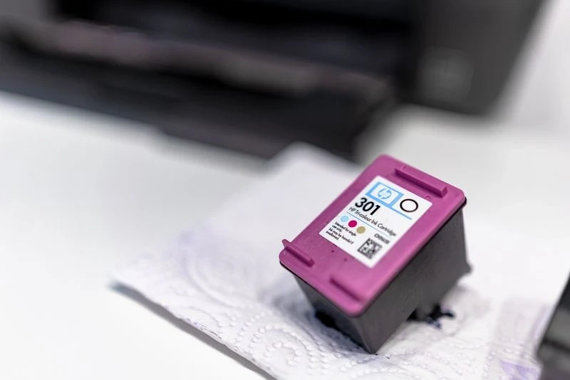
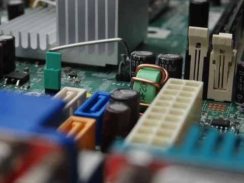
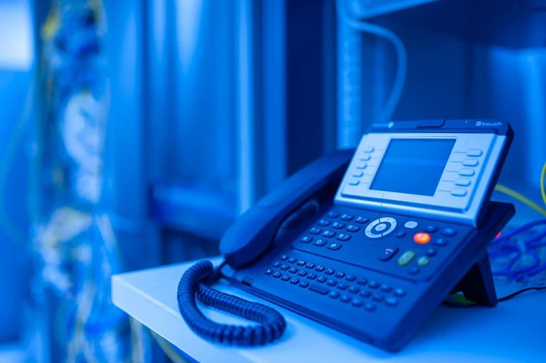
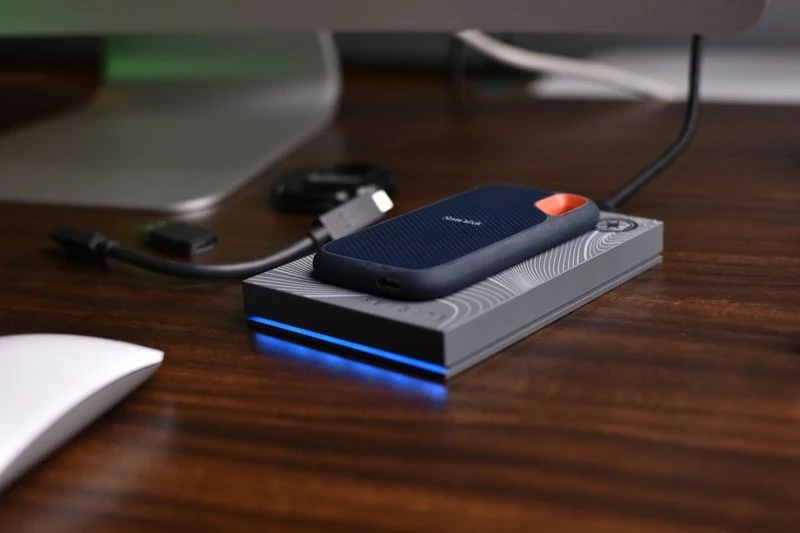
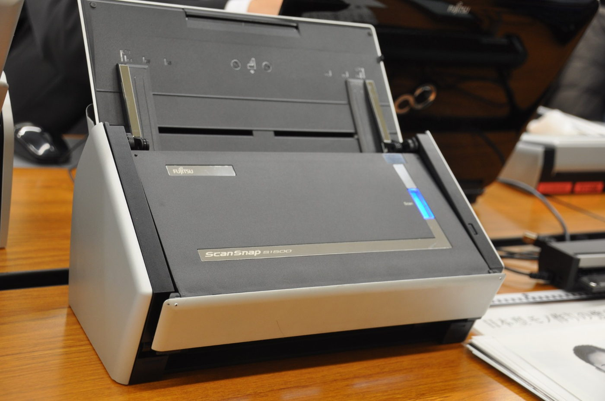
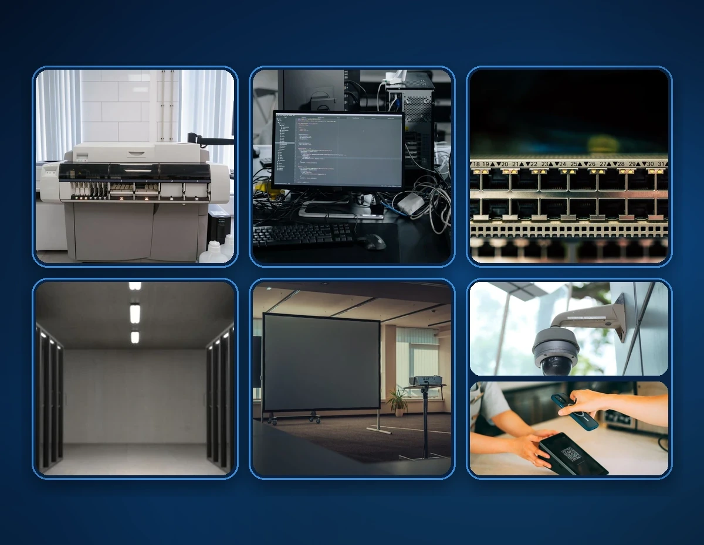
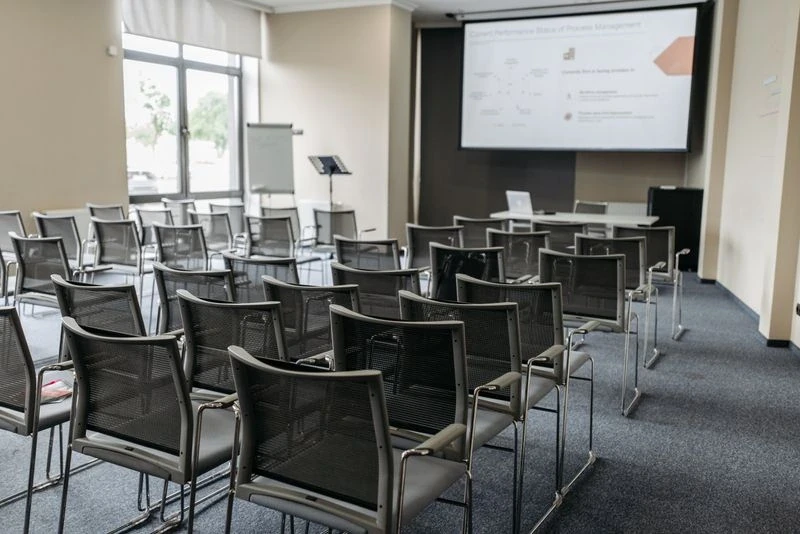
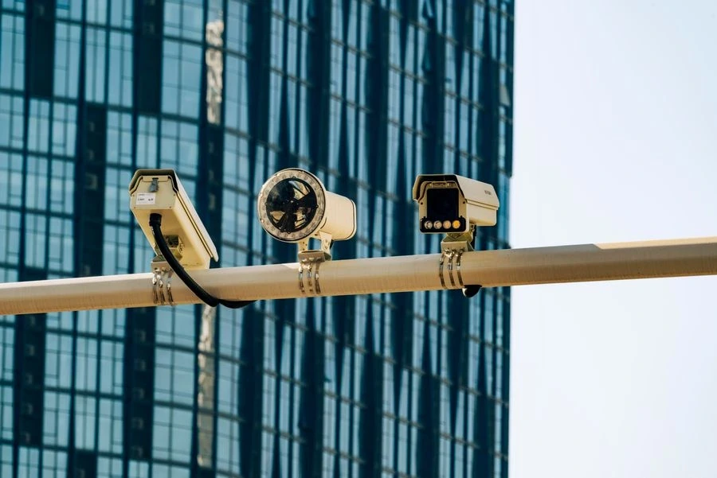
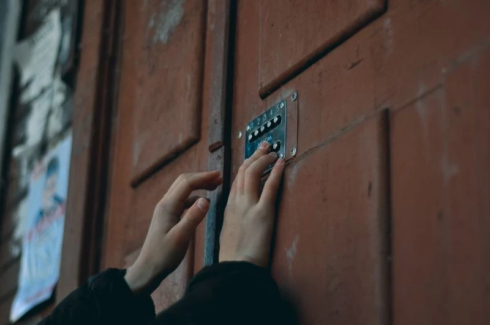
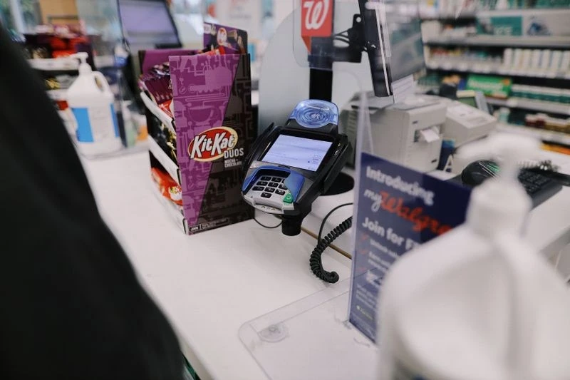

Toner ve Fotokopi Sarf Malzemeleri
Lazer yazıcı ve fotokopi cihazları için orijinal ve muadil tonerler, drum üniteleri ve diğer baskı sarf malzemeleri.
Kurum ve işletmelere baskı, bilgisayar, ağ ve iletişim, yazılım ve veri altyapısı, ofis ve görüntüleme, güvenlik ve satış noktası ürünleri tedarik ediyoruz.
Ürün listenizi veya kullanım ihtiyacınızı paylaşın; tedarik seçenekleri için teklif hazırlayalım.
İhtiyacınıza uygun kategori üzerinden ürün kapsamına hızlıca ulaşın.
Lazer yazıcı ve fotokopi cihazları için orijinal ve muadil tonerler, drum üniteleri ve diğer baskı sarf malzemeleri.

Mürekkep püskürtmeli yazıcılar, tanklı cihazlar ve plotter sistemleri için kartuş, mürekkep, baskı kafası ve ilgili sarf ürünleri.

Kurumsal kullanım için yazıcı, fotokopi ve plotter cihazları; 3D yazıcılar, uyumlu filamentler ve baskı reçineleri.
Ofis kâğıtları, yapışkanlı etiketler, termal rulolar, plotter kâğıtları ve geniş format baskı malzemeleri.
Dizüstü, masaüstü, All-in-One ve mini bilgisayarlar; monitör, klavye, fare, kulaklık ve bilgisayar aksesuarları.

İşlemci, anakart, RAM, ekran kartı, SSD, dahili disk, güç kaynağı, kasa ve soğutma bileşenleri.
Tabletler, akıllı telefonlar ve dayanıklı tabletler; modele uygun kılıf, ekran koruyucu, şarj cihazı ve taşınabilir şarj ürünleri.
Monitör kolları, ekran ve dizüstü bilgisayar standları, ergonomik klavye ve fareler ile ayak ve bilek destekleri.
Switch, yönlendirici, modem ve kablosuz erişim noktaları; PoE ve ağ bağlantı ihtiyaçlarına uygun cihaz seçenekleri.
Ağ, fiber optik, görüntü ve USB kabloları; patch panel, konnektör, adaptör, dönüştürücü ve kablo düzenleme ürünleri.

IP, analog ve kablosuz telefonlar, telefon santralleri, konferans telefonları ve sistemle uyumlu kulaklık ve aksesuarlar.

Kesintisiz güç kaynakları, modele uygun UPS aküleri, regülatörler, aşırı gerilim korumalı prizler ve güç dağıtım ürünleri.
Ofis, işletim sistemi, güvenlik, yedekleme ve belge yönetimi yazılımları; ürüne uygun lisans, abonelik ve yenileme seçenekleri.

SSD’ler, dahili ve harici diskler, RAM modülleri, USB bellekler ve hafıza kartları için kapasite ve cihaz uyumuna uygun seçenekler.
Tower ve rack sunucular, NAS cihazları, uyumlu sunucu bileşenleri, rack kabinler ve altyapı aksesuarları.

Belge, kitap, fotoğraf ve kart tarayıcıları; modele uygun tarama, OCR ve belge yönetimi yazılımları.

Kâğıt imha, laminasyon, ciltleme ve kesme makineleri; hesap makineleri, para sayma cihazları ve uyumlu sarf malzemeleri.

Projeksiyon, sunum ve interaktif ekranlar; toplantı kameraları, mikrofonlar, hoparlörler ve uyumlu bağlantı ürünleri.

Profesyonel bilgilendirme ekranları, dijital tabela ürünleri, medya oynatıcılar ve modele uygun ekran askı ve taşıyıcı sistemleri.

IP ve analog kameralar, DVR/NVR kayıt cihazları, uyumlu kayıt diskleri ve kamera bağlantı aksesuarları.

Kartlı, şifreli ve modele göre biyometrik geçiş terminalleri; PDKS, elektrikli kilit, alarm paneli, sensör ve siren ürünleri.
1D/2D barkod okuyucular, etiket ve fiş yazıcılar, el terminalleri ve uyumlu baskı sarfları.

POS bilgisayarları, müşteri ekranları, para çekmeceleri, fiş yazıcılar ve elektronik tartılar; satış noktaları için uyumlu perakende ekipmanları.
Kullanım amacını, mevcut cihazların modellerini ve ürün kodlarını dikkate alarak ürün seçeneklerini değerlendiriyoruz.
Farklı ürün gruplarındaki ihtiyaçlarınızı aynı talepte paylaşabilir, teklif sürecini tek iletişim üzerinden yürütebilirsiniz.
Form, telefon, e-posta veya WhatsApp üzerinden bize ulaşabilir; ürün ve model bilgilerinizi paylaşabilirsiniz.
Ürün seçimi, teknik özellikler ve cihaz uyumluluğunda dikkat edilecek noktalar için rehberlerden yararlanabilirsiniz.
İstenen ürünü ve adedi paylaşın. Model belli değilse kullanım amacınızı ve ihtiyaç duyduğunuz özellikleri belirtin.
Ürün özelliklerini, varsa uyumluluk gereksinimlerini, bulunabilirliği ve teslimat beklentinizi talebiniz üzerinden değerlendirelim.
Fiyat, tedarik koşulları ve teklif sırasında teyit edilen teslimat bilgileri üzerinden satın alma kararınızı verebilirsiniz.
Ürün seçimi, teknik özellikler ve cihaz uyumluluğu için hazırlanan rehberleri inceleyin.
Çözünürlük, yenileme hızı ve bağlantı uyumluluğunu kontrol edin.
Tek klavye, monitör ve fare ile birden fazla bilgisayarı yönetin.
Disk sınıfını sürekli kayıt, NAS ve masaüstü iş yüküne göre belirleyin.
Görüş açısı, oturma düzeni ve ses kapsamasını birlikte planlayın.
Etiket malzemesi ve dayanıklılık beklentisine uygun ribbon türünü seçin.
Orijinal, muadil ve dolum toner arasındaki farkları, seçim kriterlerini ve dikkat edilmesi gerekenleri öğrenin.
Yazıcınıza uygun toner veya kartuşu bulmak için model adını, ürün kodunu ve kutu üzerindeki bilgileri nasıl okuyacağınızı öğrenin.
Lazer ve mürekkep püskürtmeli yazıcıların farklarını, hangi kullanım için hangisinin uygun olduğunu ve sarf malzemesi türlerini öğrenin.
A4, A3 gibi kağıt ebatlarını, gramaj (g/m²) kavramını ve kullanım amacına göre kağıt seçimini öğrenin.
HP LaserJet toner kodlarındaki harf ve rakamların anlamını, standart ve yüksek verimli seçenekleri ve doğru ürünü bulma adımlarını öğrenin.
Brother yazıcılarda toner (TN) ve drum (DR) ünitesi arasındaki farkı, mürekkep serilerini ve doğru kodu bulma adımlarını öğrenin.
Canon yazıcı ve fotokopi cihazlarında toner ve kartuş kodlarının (CRG, C-EXV, PG, CL, GI) anlamını ve doğru ürünü bulma adımlarını öğrenin.
Epson yazıcılarda şişeli (EcoTank) ve kartuşlu modeller arasındaki farkı, kod mantığını ve doğru mürekkebi bulma adımlarını öğrenin.
Bilgisayarınıza uygun SSD ve RAM seçmek için bellek türü, form faktörü, arayüz ve uyumluluk kontrol listesini inceleyin.
Monitör kolu seçerken ekran boyutu, ağırlık ve VESA bağlantı ölçüsünü nasıl kontrol edeceğinizi öğrenin.
Veri yedekleme için 3-2-1 kuralını, NAS ile harici disk arasındaki farkları ve yedekleme planı yaparken sorulacak soruları öğrenin.
UPS seçerken VA ve Watt farkını, korunacak cihazların gücünü ve yedekleme süresini nasıl hesaplayacağınızı örnekle öğrenin.
IP ve analog güvenlik kameralarının bağlantı, kablolama, kayıt cihazı ve depolama açısından farklarını karşılaştırın.
İş yerinde kaç access point gerektiğini belirleyen etkenleri, kullanıcı yoğunluğunu ve kablolu altyapı planlamasını öğrenin.
1D ve 2D barkod okuyucu farkını, kablolu ve kablosuz seçenekleri ve kasa yazılımıyla uyumluluk kriterlerini öğrenin.
Birden fazla ürün için marka, model, ürün kodu ve adet bilgilerini düzenleyerek net bir toplu teklif talebi hazırlamanın adımlarını öğrenin.
Wi-Fi nesillerini hız, frekans bandı ve cihaz uyumluluğu açısından karşılaştırın.
RAID seviyelerini disk arızası toleransı, kapasite ve performansa göre değerlendirin.
Yedek kopyaları farklı ortamlarda ve konumlarda tutun; geri yüklemeyi düzenli test edin.
Kurumsal kablosuz ağlarda kullanıcı ve cihaz doğrulamasını planlayın.
Switch, ağ kartı ve kablolama kapasitesini birlikte değerlendirin.
Çıktıları kart, PIN veya QR kodla cihaz başında serbest bırakın.
Kart frekansı, okuyucu uyumluluğu ve kimlik doğrulamayı karşılaştırın.
OneDrive, SharePoint ve Exchange verileri için geri dönüş planı kurun.
Kanal genişliği, parazit ve DFS koşullarına göre kurumsal kablosuz ağı tasarlayın.
Kart okuyucu ve kontrol paneli arasında güvenli haberleşmeyi karşılaştırın.
Kağıt, bağlantı, ESC/POS ve çekmece uyumluluğunu kontrol edin.
Veri kaybı toleransı ve hizmet geri dönüş süresini ölçülebilir hale getirin.
TPM, Secure Boot, BitLocker ve kurtarma anahtarını planlayın.
Marka adları ilgili hak sahiplerine aittir; listelenmeleri resmî iş ortaklığı veya temsilcilik anlamına gelmez.
Kullanım amacınızı, ihtiyaç duyduğunuz özellikleri ve adedi paylaşabilirsiniz. Biliniyorsa cihazın marka ve modelini ekleyebilir, ürün veya etiket fotoğrafını WhatsApp üzerinden iletebilirsiniz.
Evet. Kurum ve işletmelerin tek ürün ve toplu alım talepleri değerlendirilir. Ürüne özgü tedarik koşulları teklif sırasında belirtilir.
Ürünün adını, kullanım amacını ve biliniyorsa marka veya modelini paylaşabilirsiniz. Tedarik imkânı ürün bazında değerlendirilir.
Evet. Farklı kategorilerden ürünleri, her biri için adet ve biliniyorsa marka, model veya ürün kodu belirterek aynı talepte paylaşabilirsiniz.
Ürün grupları sayfasından ürün kapsamını, Markalar sayfasından marka örneklerini ve Rehberler bölümünden seçim ölçütlerini inceleyebilirsiniz.